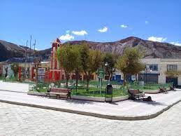
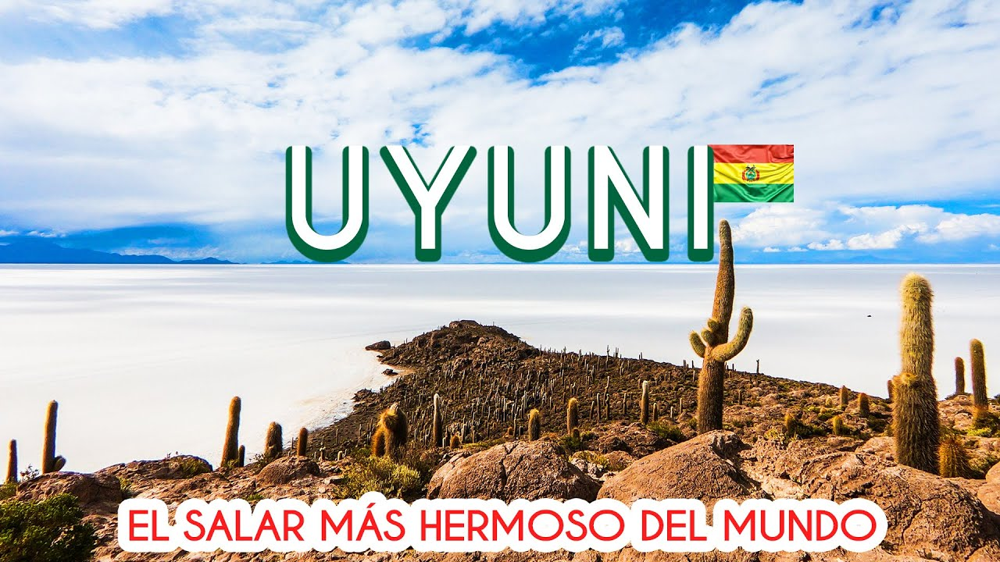
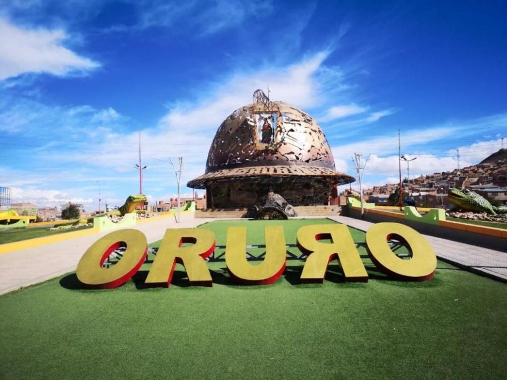
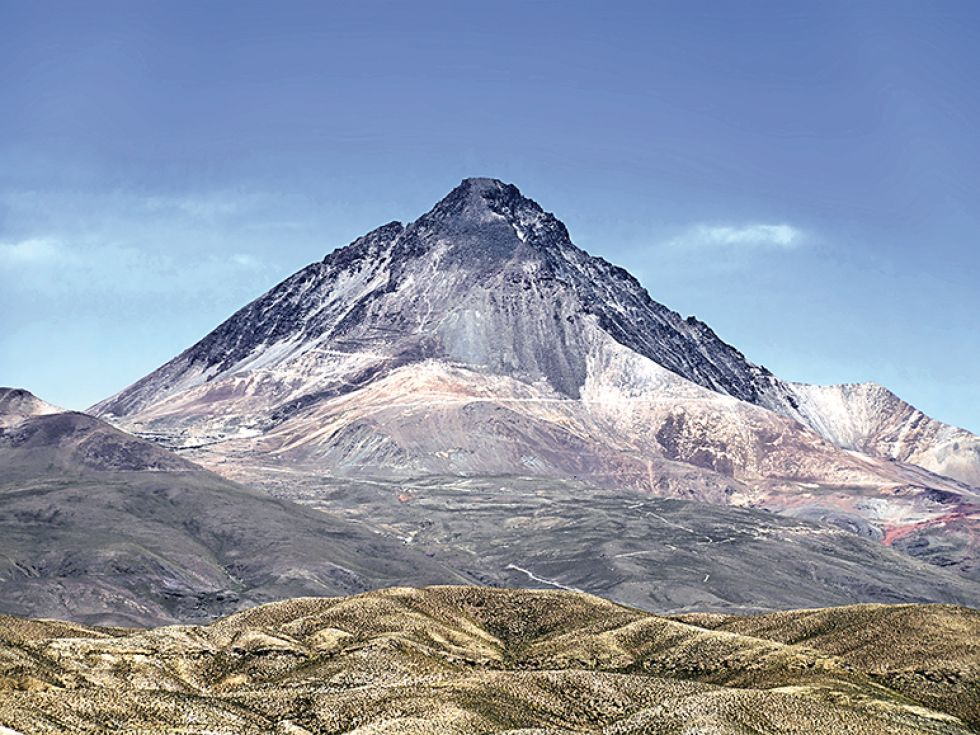

Desde Tupiza hasta Atocha el viaje dura aproximadamente dos horas, atravesando un camino rodeado de montañas y paisajes característicos del altiplano sur de Bolivia. Atocha es un pueblo minero lleno de historia y tradición, donde la calidez de su gente y la belleza natural del entorno hacen que el recorrido valga la pena y deje una huella en quienes lo visitan.

Desde Tupiza hasta Uyuni el viaje dura unas cinco horas, atravesando paisajes áridos y montañosos que anuncian la llegada al majestuoso Salar de Uyuni, el mayor desierto de sal del mundo. Este lugar mágico, único por su belleza natural, refleja el cielo como un espejo infinito y se ha convertido en uno de los mayores atractivos turísticos de Bolivia, símbolo de pureza, tranquilidad y asombro natural.

Desde Tupiza hasta Oruro el viaje toma alrededor de ocho horas, atravesando distintos paisajes del altiplano boliviano que muestran la grandeza de la tierra andina. Oruro destaca por su historia minera y su rica cultura, siendo conocida como la “Capital del Folklore de Bolivia” por su famoso Carnaval, donde la devoción, la música y la danza se unen para mostrar el alma de todo un pueblo.

Desde Tupiza hasta Chorolque el viaje dura aproximadamente seis horas, recorriendo caminos que atraviesan paisajes andinos llenos de montañas, valles y vistas impresionantes. Es una ruta que refleja la belleza natural del sur de Bolivia, donde cada tramo muestra la fuerza y el trabajo de su gente minera, además del espíritu resiliente que caracteriza a esta región llena de historia y tradición.